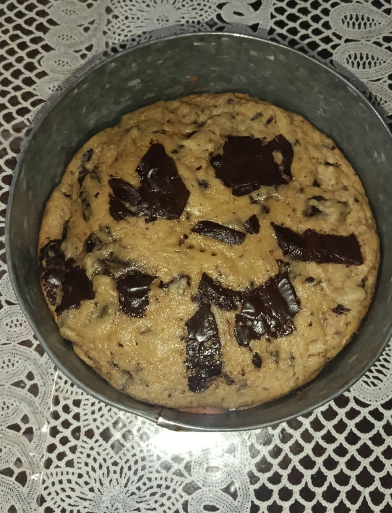

Ultimate Chocolate Chip Cookie Recipe
Ingredients
- 285g Flour
- 70g Regular Sugar
- 140g Brown Sugar
- 1 Egg
- 1 Extra Egg Yolk, Chilled
- 200g Butter
- 1/4 tsp Baking Soda
- 1/2 tsp Baking Powder
- 1 tsp Corn Starch
- Vanilla Extract to Taste
- Chocolate to Taste
- A Pinch of Salt
Method
-
Brown the butter.
Melt the butter in a pan over medium heat, stirring
until it turns golden brown and smells nutty. Let it
cool slightly.
-
Mix the sugars.
Add the regular sugar and brown sugar to the butter.
Mix until the mixture becomes lighter in colour.
-
Add an ice cube.
Carefully mix in one small ice cube to replace some
of the water lost while browning the butter. Let it
melt before continuing.
-
Add the eggs.
Mix in the egg and chilled egg yolk until combined.
Add vanilla extract to taste.
-
Mix the dry ingredients.
Add the flour, baking soda, baking powder, corn starch
and salt. Mix until a dough forms, without overmixing.
-
Add the chocolate.
Chop the chocolate into pieces and fold it into
the cookie dough.
-
Bake the cookies.
Shape the dough into portions and place them on a
lined baking tray with space between each cookie.
Bake at 175°C until the edges are golden and the
centres are just set. Check them regularly.
-
Cool and enjoy.
Leave the cookies on the tray for a few minutes
before transferring them to a cooling rack.
